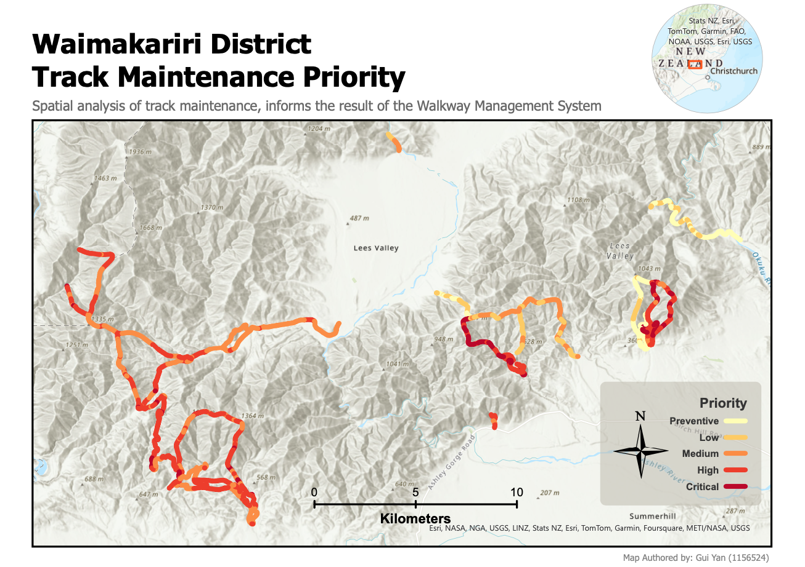

← Go Back
GIS Mapping Project: DOC Walkway Management System

The Department of Conservation (DoC) Walkway Management System project aims to enhance resource allocation by prioritizing walking tracks based on their maintenance level.
- Employing a spatial analysis system with seven key factors, such as visitor use.ptions.
- Enhancing maintenance prioritization for each track segment by assigning values and weights to factors.
- Utilizing a cumulative model where prediction factors collectively influence track maintenance prioritization.